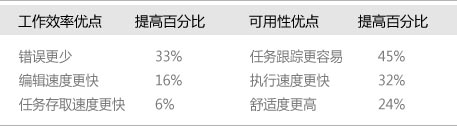

多屏显示也称一机多屏显示，即一台主机将内容显示到多台显示器，根据不同的需求可以将不同的画面显示到不同的显示屏上，在实现多屏显示效果的前提下节约成本。
联想多屏显示解决方案采用运算能力超强的至强处理器配合高性能图形显卡，有效解决了上述问题，可以用于需要处理多个文件或多视角的工作，可以让操作系统扩展到其他屏幕中。凭借联想工作站的高速并行处理能力及高性能图形显示能力，联想多屏显示方案还可以用于股票交易多屏幕看盘，用于金融理财产品的设计建模，用于保险精算工作中的大量数据运算，用于商业广告设计及产品展示等。
多屏解决方案不仅减少错误，提高编辑速度，加速任务存取，而且使任务跟踪更容易，执行速度更快，舒适度更高带来酣畅淋漓的使用体验，从而拥有绝佳的客户满意度。  上述统计数据反映的是在双显示器配置使用文字处理应用程序时所取得的提高，根据应用程序和配置，实际提高量可介于5%和100%之间
保险、证券、基金等金融行业精算师、高端投行业务分析、研发人员等对多屏显示、高速运算及并行处理有很高要求。
在国外金融行业同业人员大量采用了联想Thinkstation的多屏超算解决方案。
ThinkStation 图形工作站专为应对严峻的运算挑战而生，提供了顶级运算性能、出色的多屏显示及并行处理能力。它采用双路最新一代英特尔四核或六核处理器，辅以专业显卡和超级计算卡协同处理，极大提高运算效率，迅速完成多任务处理工作。从数据建模、产品设计和独立的多屏显示到大型数字运算和软件开发工作，ThinkStation能够帮助用户创造更高的业务价值。
联想ThinkStation多屏解决方案最多可支持16屏同时显示并运行多任务。
联想ThinkStation在全球金融行业有着广泛的知名度，得到瑞士信贷，花旗银行，JP摩根，摩根斯坦利等顶级全球金融客户的认可，成为其深度的长期合作伙伴。
联想ThinkStation为纽约华尔街、伦敦、新加坡、香港、东京、上海等全球金融中心的顶级银行和金融机构提供了紧凑型的产品系列，例如提供以C20 / C30 为首的全球最紧凑双路工作站，以及E31小机箱产品。这为金融交易员、分析师最大程度的提高了金融建模和计算的生产效率，同时节省了“寸土寸金”的CBD办公空间。
随着大量金融衍生产品、对冲基金和多行业板块分析的需求大量涌现的创新时代，金融行业面临更多的挑战。急需提高生产力，特别是在从事金融复杂建模 等CPU和内存密集型计算，以及多屏显示等方面需要完整的产品和解决方案。
对于此行业趋势，ThinkStation全球事业部组建专家团队，包括金融行业的产品专家 和 解决方案专家，能够快速、及时的响应客户的产品和方案需求，并且拥有特殊客户的定制化的快速反应能力，携手客户一起为开拓金融市场方面提供了最强有力的支持。
联想图形工作站ThinkStation C30 + ThinkVision显示器 + 四屏显示支架